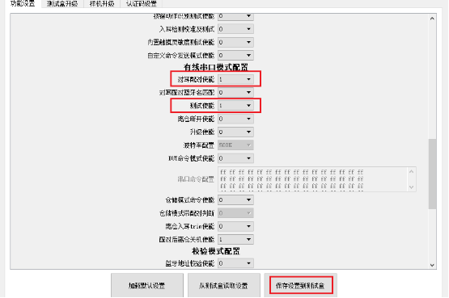
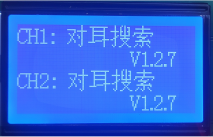
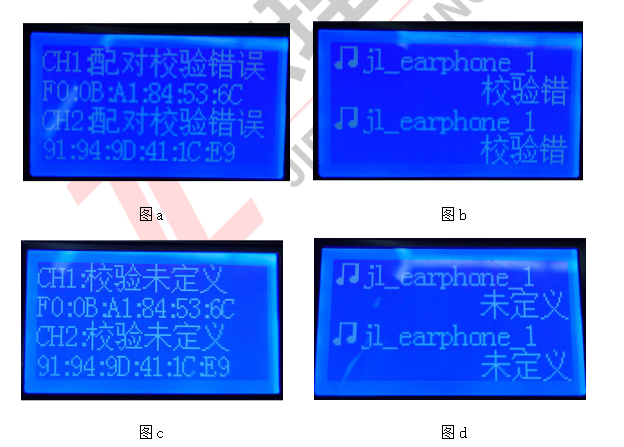
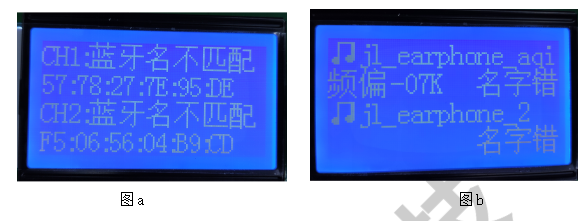
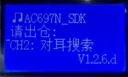
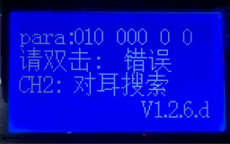
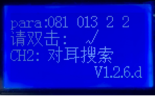
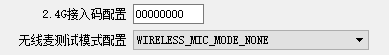

3.6. Bluetooth Device Test Procedure
3.6.1. Classic Bluetooth device test procedure
1. Enable the test functions according to your actual needs and set the DIP switches accordingly, e.g. whether to test calls and frequency offset
2. The test box can connect to two devices at the same time for testing. It is recommended to power on 4 or more devices under test at the same time so that they are waiting to be connected
3. After a device is connected, 1 shows the test status (an audio icon indicates the music playback test and a phone icon indicates the call test), 2 shows the device name, 3 shows the device's frequency offset, and 4 shows the previous/next track, pause and volume up/down buttons
4. After the music playback test, press the pause button on the device to enter the call test, and speak into the device's MIC to test the call. When the test is finished, press the hang-up button to disconnect and search for the next device

3.6.2. Quick test procedure
1. Turn on the quick test function with the DIP switch
2. Power on 4 or more devices at the same time so that they are waiting to be connected
3. After the test box connects to a device, it sends a command to put the device into quick test mode; customers should make the device indicate entry into this mode with a flashing LED
4. The device turns on MIC amplification: speak into the MIC, and the sound comes out of the device's speaker
5. Press a button on the device; it plays a key tone
6. When the test is finished, power off the device
3.6.3. BLE test procedure
1. Turn on the BLE test function with the DIP switch and choose whether to test the master or the slave (for the DIP switch settings, see the section "DIP switch functions")
2. If automatic frequency offset correction is required, turn on the frequency offset correction DIP switch
3. After the test box connects to a device, it sends a command to put the device into BLE test mode; once connected, a frequency offset test is performed by default
4. After the frequency offset test, the test box shows the Bluetooth name (for the master test, only the master MAC address is shown) and the frequency offset value (if automatic frequency offset correction is enabled, the calibrated frequency offset is shown after calibration)
5. When a button on the device is pressed, the test box shows the button number
6. When the test is finished, press the test button for the corresponding channel on the test box to disconnect the device and wait for the next device to connect
3.6.4. Wired TWS pair test
Requirements
1. Test boxes with hardware version v2.2 or later and firmware version v2.1.6 or later support the TWS pair test interface.
2. For TWS devices whose LDO pin supports UART communication (shared with the UART IO) and whose LDOIN capacitor is smaller than 103, the test box can be connected to the TWS devices through the test box UART adapter board.
Supported features
Supports fast online pairing of earbud pairs
Supports fast connection and testing of earbud pairs
Usage
Turn on the TWS pairing or TWS pair test switch in the PC interface, click "Save to test box" (保存到测试盒) and then restart the test box; the test box enters the "TWS pair search" (对耳搜索) screen.


If only the "TWS pairing enable" (对耳配对使能) switch is turned on, no connection test is performed after successful TWS pairing; the screen is shown below.

If only the "TWS pair test enable" (对耳测试使能) switch is turned on, no TWS pairing is performed; only the connection test is performed.
If both "TWS pairing enable" (对耳配对使能) and "TWS pair test enable" (对耳测试使能) are turned on, pairing is performed during the connection test. If pairing succeeds, "TWS paired" (对耳已配对) is displayed during the connection.

TWS pairing check (对耳配对判断)
This option takes effect only when "TWS pairing enable" (对耳配对使能) is 1.
When set to 1, if the TWS SDK version supports returning pairing information, pairing succeeds only when the earbuds pair successfully and return correct pairing information; if incorrect pairing information is returned, an error is reported (the error screens are shown below: figure a shows the screen when only TWS pairing is enabled; figure b shows the screen when both TWS pairing and TWS pair test are enabled).
When set to 0, no pairing information is returned and checked during TWS pairing.

Note
If the earphone SDK version does not yet support returning pairing information, set this option to 0; otherwise, TWS pairing cannot be performed and an error is reported. The error screens are shown below: figure c shows the screen when only TWS pairing is enabled; figure d shows the screen when both TWS pairing and TWS pair test are enabled.
TWS pairing Bluetooth name match enable (对耳配对蓝牙名匹配使能)
This option takes effect only when "TWS pairing enable" (对耳配对使能) is 1.
When set to 1, if the TWS SDK version supports Bluetooth name matching, pairing succeeds only if the left and right earbuds have the same Bluetooth name; if their Bluetooth names differ, an error is reported (the error screens are shown below: figure a shows the screen when only TWS pairing is enabled; figure b shows the screen when both TWS pairing and TWS pair test are enabled).
When set to 0, the Bluetooth names of the left and right earbuds are not checked during TWS pairing.

Note
If the earphone SDK version does not yet support Bluetooth name matching, set this option to 0; otherwise, TWS pairing cannot be performed.
TWS out-of-case Bluetooth disconnect enable (对耳离仓蓝牙断开使能)
This option takes effect only when "TWS pair test enable" (对耳测试使能) is 1.
When set to 1, after an earphone has established a Bluetooth connection with the test box, the test box actively disconnects the Bluetooth connection when the earphone is taken out of the case.
When set to 0, after an earphone has established a Bluetooth connection with the test box, the Bluetooth connection is kept when the earphone is taken out of the case.
3.6.5. Built-in touch sensitivity test
V1.2.6.d adds the built-in touch sensitivity test enable option (
this option requires SDK support)

When "Built-in touch sensitivity test enable" (内置触摸灵敏度测试使能) is set to 0, this test item is disabled.
When "Built-in touch sensitivity test enable" (内置触摸灵敏度测试使能) is set to 1, once the test box has established a classic Bluetooth connection, the test box LCD prompts you to perform the corresponding actions for the built-in touch sensitivity test.
2. Test procedure
Test scenario 1: set "Test enable" (测试使能) under "Wired UART mode configuration" (有线串口模式配置) to 1, so that the classic Bluetooth connection is established through UART communication.
[1] After the Bluetooth connection is established, "Please take out of case" (请出仓) is displayed; take the earphone out of the UART communication case.

[2] After the earphone is taken out, the test box LCD prompts "Please double-tap" (请双击). Double-tap once within 5s; when the double-tap is recognized, the test result "√" is shown;
If recognition fails, an error or timeout is returned: the test box shows "Timeout" (超时) or "Error" (错误), accompanied by a single beep. The test result is shown with the corresponding test parameters (the first value is the touch change amount and the second is the change as a percentage)



Test scenario 2: set "Test enable" (测试使能) under "Wired UART mode configuration" (有线串口模式配置) to 0, so that the classic Bluetooth connection is established by over-the-air wireless search. After the Bluetooth connection is established, the test proceeds as in step 2 of test scenario 1.
3.6.6. Using the wireless microphone test mode
V1.2.6.e adds the wireless microphone test mode enable option (
this option requires SDK support)

Note
Wireless microphone solutions developed with the adapter series SDK use a non-standard Bluetooth connection and therefore cannot connect directly to the test box for frequency offset testing and wireless upgrade, so this option was added;
Select the mode that corresponds to the SDK's application type. Each mode relates to a specific SDK configuration; you must select the mode that matches the SDK configuration in order to establish a wireless connection with the test box.
Option description
The default value is "WIRELESS_MIC_MODE_NONE", i.e. wireless microphone test mode is not started. The other options must match the corresponding SDK configuration, as shown in the table below:
Option |
CONFIG_ADATER_APP_SEL |
CONFIG_ADAPTER_WIRELESS_ROLE_SEL |
WIRELESS_MIC_BT_MODE |
config_rf_oob |
|---|---|---|---|---|
WIRELESS_MIC_1T1_TX_BT_MODE_1_OOB_1 |
CONFIG_ADAPTER_APP_WIRELESS_MIC_1T1 |
tx_1t1 |
1 |
1 |
WIRELESS_MIC_1T1_RX_BT_MODE_1_OOB_1 |
CONFIG_ADAPTER_APP_WIRELESS_MIC_1T1 |
rx_1t1 |
1 |
1 |
WIRELESS_MIC_1T1_TX_BT_MODE_1_OOB_0 |
CONFIG_ADAPTER_APP_WIRELESS_MIC_1T1 |
tx_1t1 |
1 |
0 |
WIRELESS_MIC_1T1_RX_BT_MODE_1_OOB_0 |
CONFIG_ADAPTER_APP_WIRELESS_MIC_1T1 |
rx_1t1 |
1 |
0 |
WIRELESS_MIC_2T1_TX_BT_MODE_0_OOB_0 |
CONFIG_ADAPTER_APP_WIRELESS_MIC_2T1 |
tx_2t1 |
When ENABLE is configured, |
0 |
WIRELESS_MIC_2T1_RX_BT_MODE_0_OOB_0 |
CONFIG_ADAPTER_APP_WIRELESS_MIC_2T1 |
rx_2t1 |
When ENABLE is configured, |
0 |
WIRELESS_MIC_DUPLEX_DONGLE |
CONFIG_ADAPTER_APP_WIRELESS_DUPLEX |
duplex_dongle |
When ENABLE is configured, |
0 |
WIRELESS_MIC_DUPLEX_EARPHONE |
CONFIG_ADAPTER_APP_WIRELESS_DUPLEX |
duplex_earphone |
When ENABLE is configured, |
0 |